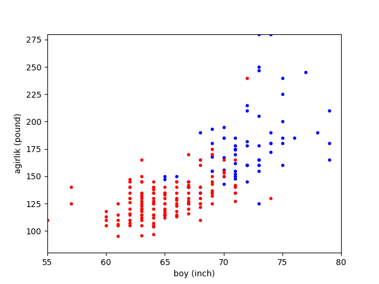
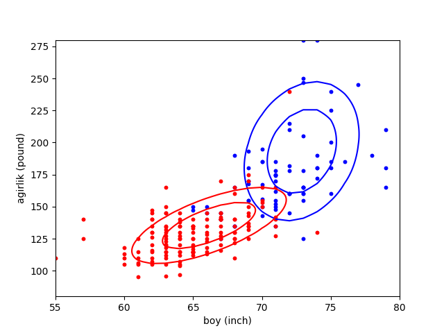
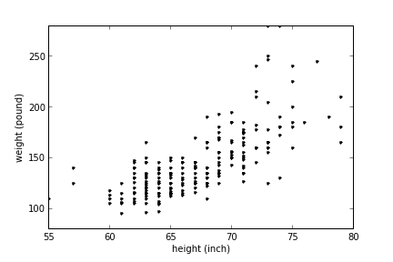
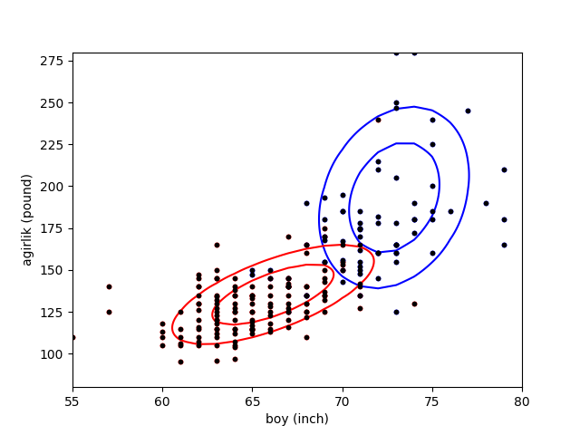
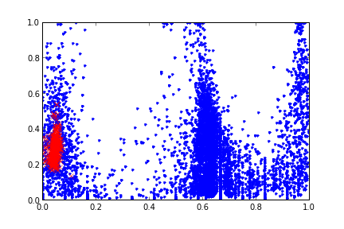

Gaussian (normal) dağılımı tek tepesi olan (unimodal) bir dağılımdır. Bu demektir ki eğer birden fazla tepe noktası olan bir veriyi modellemek istiyorsak, değişik yaklaşımlar kullanmamız gerekir. Birden fazla Gaussian’ı “karıştırmak (mixing)” bu tür bir yaklaşım. Karıştırmak, karışım içindeki her Gaussian’dan gelen sonuçları toplamaktır, yani kelimenin tam anlamıyla her veri noktasını teker teker karışımdaki tüm dağılımlara geçip sonuçları ve bir ağırlık üzerinden toplamaktır. Çok boyutlu Gaussian’lar için mesela,
\[ f(x) = \sum_z \pi_k N(x | \mu_k,\Sigma_k) \]
\(\pi_k\) karıştırma oranlarıdır (mixing proportions). Bernoulli karışımlarını anlatan yazıya kıyasla, oradaki \(\theta\)’yi 0/1 hücreleri için olasılıklar olarak aldık, şimdi \(\theta\) içinde \(\mu_k,\Sigma_k\) var, yani \(\theta=(\mu_k,\Sigma_k)\).
İki Gaussian olsa \(\pi_1,\pi_2\) oranları 0.2, 0.8 olabilir ve her nokta her Gaussian’a verildikten sonra tekabül eden ağırlıkla mesela sırayla \(0.2,0.8\) ile çarpılıp toplanır.
Maksimizasyon adımı için gereken hesapların türetilmesi [5, sf. 392]’de bulunabilir.
Örnek olarak alttaki veriye bakalım.
data = np.loadtxt('biometric_data_simple.txt',delimiter=',')
women = data[data[:,0] == 1]
men = data[data[:,0] == 2]
plt.xlim(55,80)
plt.ylim(80,280)
plt.plot (women[:,1],women[:,2], 'b.')
plt.plot (men[:,1],men[:,2], 'r.')
plt.xlabel('boy (inch)')
plt.ylabel('agirlik (pound)')
plt.savefig('mixnorm_1.png')
Bu grafik kadınlar ve erkeklerin boy (height) ve kilolarını (weight) içeren bir veri setinden geliyor, veri setinde erkekler ve kadınlara ait olan ölçümler önceden işaretlenmiş / etiketlenmiş (labeled), biz de bu işaretleri kullanarak kadınları kırmızı erkekleri mavi ile grafikledik. Ama bu işaretler / etiketler verilmiş olsun ya da olmasın, kavramsal olarak düşünürsek eğer bu veriye bir dağılım uydurmak (fit) istersek bir karışım kullanılması gerekli, çünkü iki tepe noktasiyle daha rahat temsil edileceğini düşündüğümüz bir durum var ortada.
# Multivariate gaussian, contours
#
import scipy.stats
import em
data = np.loadtxt('biometric_data_simple.txt',delimiter=',')
women = data[data[:,0] == 1]
men = data[data[:,0] == 2]
plt.xlim(55,80)
plt.ylim(80,280)
plt.plot (women[:,1],women[:,2], 'b.')
plt.plot (men[:,1],men[:,2], 'r.')
plt.xlabel('boy (inch)')
plt.ylabel('agirlik (pound)')
x = np.arange(55., 80., 1)
y = np.arange(80., 280., 1)
X, Y = np.meshgrid(x, y)
Z = np.zeros(X.shape)
nx, ny = X.shape
mu1 = np.array([ 72.89350086, 193.21741426])
sigma1 = np.matrix([[ 7.84711283, 25.03111826],
[ 25.03111826, 1339.70289046]])
for i in range(nx):
for j in range(ny):
Z[i,j] = em.norm_pdf(np.array([X[i,j], Y[i,j]]),mu1,sigma1)
levels = np.linspace(Z.min(), Z.max(), 4)
plt.contour(X, Y, Z, colors='b', levels=levels)
Z = np.zeros(X.shape)
nx, ny = X.shape
mu2 = np.array([ 66.15903841, 135.308125 ])
sigma2 = np.matrix([[ 14.28189396, 51.48931033],
[ 51.48931033, 403.09566456]])
for i in range(nx):
for j in range(ny):
Z[i,j] = em.norm_pdf(np.array([X[i,j], Y[i,j]]),mu2,sigma2)
levels = np.linspace(Z.min(), Z.max(), 4)
plt.contour(X, Y, Z, colors='r', levels=levels)
plt.savefig('mixnorm_2.png')
Bu karışım içindeki Gaussian’ları üstteki gibi çizebilirdik (gerçi üstteki aslında ileride yapacağımız net bir hesaptan bir geliyor, ona birazdan geliyoruz, ama çıplak gözle de bu şekil uydurulabilirdi). Modeli kontrol edelim, elimizde bir karışım var, nihai olasılık değeri \(p(x)\)’i nasıl kullanırız? Belli bir noktanın olasılığını hesaplamak için bu noktayı her iki Gaussian’a teker teker geçeriz (örnekte iki tane), ve gelen olasılık sonuçlarını karışım oranları ile çarparak toplarız. Ağırlıklar sayesinde karışım entegre edilince hala 1 değeri çıkıyor zaten bir dağılımın uyması gereken şartlardan biri bu. Ayrıca bir dağılımın diğerinden daha önemli olduğu ağırlıklar üzerinden modele verilmiş oluyor.
Etiketler Bilinmiyorsa
Eğer etiketler bize önceden verilmemiş olsaydı, hangi veri noktalarının kadınlara, hangilerinin erkeklere ait olduğunu bilmeseydik o zaman ne yapardık? Bu veriyi grafiklerken etiketleri renkleyemezdik tabii ki, şöyle bir resim çizebilirdik ancak,
import scipy.stats
data = np.loadtxt('biometric_data_simple.txt',delimiter=',')
women = data[data[:,0] == 1]
men = data[data[:,0] == 2]
plt.xlim(55,80)
plt.ylim(80,280)
plt.plot (data[:,1],data[:,2], 'k.')
plt.xlabel('boy (inch)')
plt.ylabel('agirlik (pound)')
plt.savefig('mixnorm_3.png')
Fakat yine de şekil olarak iki kümeyi görebiliyoruz. Acaba öyle bir yapay öğrenim algoritması olsa da, biz bir karışım olduğunu tahmin edip, sonra o karışımı veriye uydururken, etiket değerlerini de kendiliğinden tahmin etse?
Alttaki kod Beklenti-Maksimizasyon üzerinden kümeleme yapar. Konunun teorik kısmı altta ve [6] yazısında bulunabilir.
Türetmek
Karışımda birden fazla çok boyutlu Gaussian olacak, bu Gaussian’lardan \(i\)’inci Gaussian
\[ f_i(x) = f(x;\mu_i,\Sigma_i) = \frac{1}{(2\pi)^{d/2} |\Sigma_i|^{1/2}} \exp \bigg\{ -\frac{(x-\mu)^T\Sigma_i^{-1}(x-\mu_i)}{2} \bigg\} \qquad (1) \]
olur, \(x\) çok boyutlu veri noktasıdır, ve kümeleme başlamadan önce \(\mu_i,\Sigma_i\) bilinmez, küme sayısı \(k\) bilinir. O zaman karışım modeli
\[ f(x) = \sum_{i=1}^{k} f_i(x)P(C_i) = \sum_{i=1}^{k} f(x;\mu_i,\Sigma_i)P(C_i) \]
\(P(C_i)\)’a karışım oranları deniyor, ki \(\sum_i P(C_i) = 1\). Bazı metinlerde bu \(\pi_i\) olarak ta gösterilebiliyor. Tüm veri için maksimum olurluk
\[ L = \sum_{j=1}^{n} \ln f(x_j) = \sum_{j=1}^{n} \ln \bigg( \sum_{i=1}^{k} f(x_j;\mu_i,\Sigma_i)P(C_i) \bigg) \]
Şimdi herhangi bir parametre \(\theta_i\) için (yani \(\mu_i\) ya da \(\Sigma_i\)),
\[ \frac{\partial L}{\partial \theta_i} = \frac{\partial }{\partial \theta_i} \bigg(\sum_{j=1}^{n} \ln f(x_j) \bigg) \]
\[ = \sum_{j=1}^{n} \big( \frac{1}{f(x_j)} \cdot \frac{\partial f(x_j)}{\partial \theta_i} \big) \]
\[ \sum_{j=1}^{n} \bigg( \frac{1}{f(x_j)} \sum_{a=1}^{k} \frac{\partial }{\partial \theta_i} \big( f(x_j;\sigma_a,\Sigma_a)P(C_a) \big) \bigg) \]
\[ \sum_{j=1}^{n} \bigg( \frac{1}{f(x_j)} \cdot \frac{\partial }{\partial \theta_i} \big( f(x_j;\sigma_i,\Sigma_i)P(C_i) \big) \bigg) \]
En son adım mümkün çünkü \(\theta_i\) parametresi \(i\)’inci kümeye (Gaussian’a) ait, ve diğer kümelerin bakış açısına göre (onlara göre kısmi türev alınınca) bu parametre sabit sayılıyor.
Şimdi \(|\Sigma_i| = \frac{1}{|\Sigma^{-1}|}\) eşitliğinden hareketle (1)’deki çok boyutlu Gaussian’ı şöyle yazabiliriz,
\[ f(x_j;\sigma_i,\Sigma_i) = (2\pi)^{-d/2} |\Sigma^{-1}|^{1/2} \exp \big[ g(\mu_i,\Sigma_i) \big] \] ki
\[ g(\mu_i,\Sigma_i) = -\frac{1}{2}(x_j-\mu_i)^T\Sigma_i^{-1}(x_j-\mu_i) \]
Yani log-olurluk fonksiyonunun türevi şu şekilde yazılabilir,
\[ \frac{\partial L}{\partial \theta_i} = \sum_{j=1}^{n} \bigg( \frac{1}{f(x_j)} \frac{\partial }{\partial \theta_i} \big( (2\pi)^{-d/2} |\Sigma_i^{-1}|^{1/2} \exp\big[ g(\mu_i,\Sigma_i) \big] P(C_i) \big) \bigg) \qquad (3) \]
\(\mu_i\) için maksimum-olurluk kestirme hesabı yapmak için log olurluğun \(\theta_i=\mu_i\)’a göre türevini almamız gerekiyor. Üstteki formülde gördüğümüz gibi \(\mu_i\)’a bağlı olan tek terim \(\exp\big[ g(\mu_i,\Sigma_i) \big]\). Şimdi
\[ \frac{\partial }{\partial \theta_i} \exp \big[ g(\mu_i,\Sigma_i) \big] = \exp \big[ g(\mu_i,\Sigma_i) \big] \cdot \frac{\partial }{\partial \theta_i} g(\mu_i,\Sigma_i) \qquad (2) \]
ve \[ \frac{\partial }{\partial \mu_i}g(\mu_i,\Sigma_i) = \Sigma_i^{-1}(x_j-\mu_i) \]
formüllerini kullanarak log olurluğun \(\mu_i\)’ya göre türevi
\[ \frac{\partial L}{\partial \mu_i} = \sum_{j=1}^{n} \bigg( \frac{1}{f(x_j)} (2\pi)^{-d/2} |\Sigma_i^{-1}|^{1/2} \exp\big[ g(\mu_i,\Sigma_i) \big] P(C_i) \Sigma^{-1} (x_j-\mu_i) \bigg) \]
\[ = \sum_{j=1}^{n} \bigg( \frac{f(x_j;\mu_i,\Sigma_i)P(C_i)}{f(x_j)} \cdot \Sigma_i^{-1} (x_j-\mu_i) \bigg) \]
\[ = \sum_{j=1}^{n} w_{ij} \Sigma_i^{-1}(x_j-\mu_i) \]
Üstteki forma erişmek için (2) ve alttaki formülü kullandık.
\[ P(C_i|x_j) = \frac{P(x_j|C_i)P(C_i)}{\sum_{a=1}^{k}P(x_j|C_a)P(C_a)}\]
ki bunun anlamı
\[ w_{ij} = P(C_i|x_j) = \frac{f(x_j;\mu_i,\Sigma_i)P(C_i)}{f(x_j)}\]
Üstteki kısmi türevi sıfıra eşitleyip çözer ve her iki tarafı \(\Sigma_i\) ile çarparsak,
\[ \sum_{j=1}^{n} w_{ij} (x_j-\mu_i) = 0 \]
elde ederiz, bu demektir ki
\[ \sum_{j=1}^{n} w_{ij}x_j = \mu_i\sum_{j=1} w_{ij} \]
o zaman
\[ \mu_i = \frac{\sum_{j=1}^{n} w_{ij}x_j}{\sum_{j=1}^{n} w_{ij}}\]
Kovaryans Matrisi \(\Sigma_i\)’i Hesaplamak
\(\Sigma_i\) hesabı için (3) kısmi türevinin \(|\Sigma_i^{-1}|^{1/2} \exp(g(\mu_i,\Sigma_i))\) üzerindeki çarpım kuralı (product rule) kullanılarak \(\Sigma_i^{-1}\)’ye göre alınması gerekiyor.
Her kare matris \(A\) için \(\frac{\partial |A|}{\partial A} = |A| \cdot (A^{-1})^T\) olduğundan hareketle, \(|\Sigma_i^{-1}|^{1/2}\)’nin \(\Sigma_i^{-1}\)’ya göre türevi
\[ \frac{\partial |\Sigma_i^{-1}|^{1/2}}{\partial \Sigma_i^{-1}} = \frac{1}{2} \cdot |\Sigma_i^{-1}|^{-1/2} \cdot |\Sigma_i^{-1}| \cdot \Sigma_i = \frac{1}{2} |\Sigma_i^{-1}|^{1/2} \cdot \Sigma_i \]
Şimdi \(A \in \mathbb{R}^{d \times d}\) ve vektörler \(a,b \in \mathbb{R}^d\) için \(\frac{\partial }{\partial A}a^TAb = ab^T\) olmasından hareketle (3)’teki \(\exp [g(\mu_i,\Sigma_i)]\)’in \(\Sigma_i^{-1}\) gore türevi,
\[ \frac{\partial }{\partial \Sigma^{-1}} \exp\big[ g(\mu_i,\Sigma_i)\big] = -\frac{1}{2} \exp \big[ g(\mu_i,\Sigma_i) (x_j-\mu_i)(x_j-\mu_i)^T \big] \]
Üstteki ve iki üstteki formül üzerinde türev çarpım kuralını kullanırsak,
\[ \frac{\partial }{\partial \Sigma_i^{-1}} |\Sigma_i^{-1}|^{1/2} \exp\big[ g(\mu_i,\Sigma_i) \big] = \]
\[ = \frac{1}{2} |\Sigma_i^{-1}|^{1/2} \Sigma_i \exp\big[ g(\mu_i,\Sigma_i) \big]- \frac{1}{2} |\Sigma_i^{-1}|^{1/2} \exp\big[ g(\mu_i,\Sigma_i) \big] (x_j-\mu_i)(x_j-\mu_i)^T \]
\[ = \frac{1}{2} \cdot |\Sigma_i^{-1}|^{1/2} \cdot \exp\big[ g(\mu_i,\Sigma_i) \big] \big( \Sigma_i - (x_j-\mu_i)(x_j-\mu_i)^T \big) \]
Üstteki son formülü (3)’e sokarsak, \(\Sigma_i^{-1}\)’e göre log olurluğun türevi
\[ \frac{\partial L}{\partial \Sigma_i^{-1}} = \frac{1}{2} \sum_{j=1}^{n} \frac {(2\pi)^{-d/2} |\Sigma_i^{-1}|^{1/2}\exp\big[ g(\mu_i,\Sigma_i) P(C_i) }{f(x_j)} \big( \Sigma_i - (x_j-\mu_i)(x_j-\mu_i)^T \big) \]
\[ = \frac{1}{2} \sum_{j=1}^{n} \frac{f(x_j;\mu_i,\Sigma_i) P(C_i)}{f(x_j)} \cdot \big( \Sigma_i - (x_j-\mu_i)(x_j-\mu_i)^T \big) \]
\[ = \frac{1}{2} \sum_{j=1}^{n} w_{ij} \big( \Sigma_i - (x_j-\mu_i)(x_j-\mu_i)^T \big) \]
Türevi sıfıra eşitlersek,
\[ \sum_{j=1}^{n} w_{ij} \big( \Sigma_i - (x_j-\mu_i)(x_j-\mu_i)^T \big) = 0 \]
olur, ve devam edersek alttaki sonucu elde ederiz,
\[ \Sigma_i = \frac{\sum_{j=1}^{n} w_{ij} (x_j-\mu_i)(x_j-\mu_i)^T} {\sum_{j=1}^{n} w_{ij}} \]
Karışım Ağırlıkları \(P(C_i)\)’i Hesaplamak
Bu hesabı yapmak için (3) türevinin \(P(C_i)\)’a göre alınması lazım fakat \(\sum_{a=1}^{k}P(C_a)=1\) şartını zorlamak için Lagrange çarpanları tekniğini kullanmamız gerekiyor. Yani türevin alttaki gibi alınması lazım,
\[ \frac{\partial }{\partial P(C_i)} \bigg( \ln L + \alpha \big( \sum_{a=1}^{k} P(C_a)-1 \big) \bigg) \]
Log olurluğun \(P(C_i)\)’a göre kısmi türevi alınınca,
\[ \frac{\partial L}{\partial P(C_i)} = \sum_{j=1}^{n} \frac{f(x_j;\mu_i,\Sigma_i)}{f(x_j)} \]
O zaman iki üstteki türevin tamamı şu hale gelir,
\[ \bigg( \sum_{j=1}^{n} \frac{f(x_j;\mu_i,\Sigma_i)}{f(x_j)} \bigg) + \alpha \]
Türevi sıfıra eşitlersek ve her iki tarafı \(P(C_i)\) ile çarparsak,
\[ \sum_{j=1}^{n} \frac{f(x_j;\mu_i,\Sigma_i) P(C_i)}{f(x_j)} = -\alpha P(C_i) \]
\[ \sum_{j=1}^{n} w_{ij} = -\alpha P(C_i) \qquad (4) \]
Üstteki toplamı tüm kümeler üzerinden alırsak
\[ \sum_{i=1}^{k} \sum_{j=1}^{n} w_{ij} = -\alpha \sum_{i=1}^{k} P(C_i) \]
ya da \(n = -\alpha\).
Son adım \(\sum_{i=1}^{k}w_{ij}=1\) sayesinde mümkün oldu. \(n = -\alpha\)’yi (4) içine sokunca \(P(C_i)\)’in maksimum olurluk hesabını elde ediyoruz,
\[ P(C_i) = \frac{\sum_{j=1}^{n}w_{ij}}{n}\]
from scipy.stats import multivariate_normal as mvn
import pandas as pd
import numpy as np
import matplotlib.pyplot as plt
import numpy.linalg as linalg
import math, random, copy, sys
import scipy.stats
class Cov_problem(Exception): pass
def norm_pdf(b,mean,cov):
k = b.shape[0]
part1 = np.exp(-0.5*k*np.log(2*np.pi))
part2 = np.power(np.linalg.det(cov),-0.5)
dev = b-mean
part3 = np.exp(-0.5*np.dot(np.dot(dev.transpose(),np.linalg.inv(cov)),dev))
dmvnorm = part1*part2*part3
return dmvnorm
def gm_log_likelihood(X, center_list, cov_list, p_k):
"""Finds the likelihood for a set of samples belongin to a Gaussian mixture
model.
Return log likelighood
"""
samples = X.shape[0]
K = len(center_list)
log_p_Xn = np.zeros(samples)
for k in range(K):
p = logmulnormpdf(X, center_list[k], cov_list[k]) + np.log(p_k[k])
if k == 0:
log_p_Xn = p
else:
pmax = np.max(np.concatenate((np.c_[log_p_Xn], np.c_[p]), axis=1), axis=1)
log_p_Xn = pmax + np.log( np.exp( log_p_Xn - pmax) + np.exp( p-pmax))
logL = np.sum(log_p_Xn)
return logL
def gm_assign_to_cluster(X, center_list, cov_list, p_k):
samples = X.shape[0]
K = len(center_list)
log_p_Xn_mat = np.zeros((samples, K))
for k in range(K):
log_p_Xn_mat[:,k] = logmulnormpdf(X, center_list[k], cov_list[k]) + np.log(p_k[k])
pmax = np.max(log_p_Xn_mat, axis=1)
log_p_Xn = pmax + np.log( np.sum( np.exp(log_p_Xn_mat.T - pmax), axis=0).T)
logL = np.sum(log_p_Xn)
log_p_nk = np.zeros((samples, K))
for k in range(K):
log_p_nk[:,k] = log_p_Xn_mat[:,k] - log_p_Xn
maxP_k = np.c_[np.max(log_p_nk, axis=1)] == log_p_nk
maxP_k = maxP_k * (np.array(range(K))+1)
return np.sum(maxP_k, axis=1) - 1
def logmulnormpdf(X, MU, SIGMA):
if MU.ndim != 1:
raise ValueError("MU must be a 1 dimensional array")
mu = MU
x = X.T
if x.ndim == 1:
x = np.atleast_2d(x).T
sigma = np.atleast_2d(SIGMA) # So we also can use it for 1-d distributions
N = len(MU)
ex1 = np.dot(linalg.inv(sigma), (x.T-mu).T)
ex = -0.5 * (x.T-mu).T * ex1
if ex.ndim == 2: ex = np.sum(ex, axis = 0)
K = -(N/2)*np.log(2*np.pi) - 0.5*np.log(np.linalg.det(SIGMA))
return ex + K
def gmm_init(X, K, verbose = False,
cluster_init = 'sample', \
cluster_init_prop = {}, \
max_init_iter = 5, \
cov_init = 'var'):
samples, dim = np.shape(X)
if cluster_init == 'sample':
if verbose: print ("Using sample GMM initalization.")
center_list = []
for i in range(K):
center_list.append(X[np.random.randint(samples), :])
elif cluster_init == 'box':
if verbose: print ("Using box GMM initalization.")
center_list = []
X_max = np.max(X, axis=0)
X_min = np.min(X, axis=0)
for i in range(K):
init_point = ((X_max-X_min)*np.random.rand(1,dim)) + X_min
center_list.append(init_point.flatten())
elif cluster_init == 'kmeans':
if verbose: print ("Using K-means GMM initalization.")
# Normalize data (K-means is isotropic)
normalizerX = preproc.Normalizer(X)
nX = normalizerX.transform(X)
center_list = []
best_icv = np.inf
for i in range(max_init_iter):
m, kcc = kmeans.kmeans(nX, K, iter=100, **cluster_init_prop)
icv = kmeans.find_intra_cluster_variance(X, m, kcc)
if best_icv > icv:
membership = m
cc = kcc
best_icv = icv
cc = normalizerX.invtransform(cc)
for i in range(cc.shape[0]):
center_list.append(cc[i,:])
print (cc)
else:
raise "Unknown initialization of EM of MoG centers."
# Initialize co-variance matrices
cov_list = []
if cov_init=='iso':
for i in range(K):
cov_list.append(np.diag(np.ones(dim)/1e10))
#cov_list.append(np.diag(np.ones(dim)))
elif cov_init=='var':
for i in range(K):
cov_list.append(np.diag(np.var(X, axis=0)/1e10))
else:
raise ValueError('Unknown option used for cov_init')
p_k = np.ones(K) / K # Uniform prior on P(k)
return (center_list, cov_list, p_k)
def em_gm(X, K, max_iter = 50, verbose = False, \
iter_call = None,\
delta_stop = 1e-6,\
init_kw = {}, \
max_tries = 10,\
diag_add = 1e-3):
samples, dim = np.shape(X)
clusters_found = False
while clusters_found==False and max_tries>0:
max_tries -= 1
# Initialized clusters
center_list, cov_list, p_k = gmm_init(X, K, **init_kw)
# Now perform the EM-steps:
try:
center_list, cov_list, p_k, logL = \
gmm_em_continue(X, center_list, cov_list, p_k,
max_iter=max_iter, verbose=verbose,
iter_call=iter_call,
delta_stop=delta_stop,
diag_add=diag_add)
clusters_found = True
except Cov_problem:
if verbose:
print ("Problems with the co-variance matrix, tries left ", max_tries)
if clusters_found:
return center_list, cov_list, p_k, logL
else:
raise Cov_problem()
def gmm_em_continue(X, center_list, cov_list, p_k,
max_iter = 50, verbose = False, \
iter_call = None,\
delta_stop = 1e-6,\
diag_add = 1e-3,\
delta_stop_count_end=10):
"""
"""
delta_stop_count = 0
samples, dim = np.shape(X)
K = len(center_list) # We should do some input checking
if diag_add!=0:
feature_var = np.var(X, axis=0)
diag_add_vec = diag_add * feature_var
old_logL = np.NaN
logL = np.NaN
for i in range(max_iter):
try:
center_list, cov_list, p_k, logL = __em_gm_step(X, center_list,\
cov_list, p_k, K, diag_add_vec)
except np.linalg.linalg.LinAlgError: # Singular cov matrix
raise Cov_problem()
if iter_call is not None:
iter_call(center_list, cov_list, p_k, i)
# Check if we have problems with cluster sizes
for i2 in range(len(center_list)):
if np.any(np.isnan(cov_list[i2])):
print ("problem")
raise Cov_problem()
if old_logL != np.NaN:
if verbose:
print ("iteration=", i, " delta log likelihood=", \
old_logL - logL)
if np.abs(logL - old_logL) < delta_stop: #* samples:
delta_stop_count += 1
if verbose: print ("gmm_em_continue: delta_stop_count =", delta_stop_count)
else:
delta_stop_count = 0
if delta_stop_count>=delta_stop_count_end:
break # Sufficient precision reached
old_logL = logL
try:
gm_log_likelihood(X, center_list, cov_list, p_k)
except np.linalg.linalg.LinAlgError: # Singular cov matrix
raise Cov_problem()
return center_list, cov_list, p_k, logL
def __em_gm_step(X, center_list, cov_list, p_k, K, diag_add_vec):
samples = X.shape[0]
# New way of calculating the log likelihood:
log_p_Xn_mat = np.zeros((samples, K))
for k in range(K):
log_p_Xn_mat[:,k] = logmulnormpdf(X, center_list[k], cov_list[k]) + np.log(p_k[k])
pmax = np.max(log_p_Xn_mat, axis=1)
log_p_Xn = pmax + np.log( np.sum( np.exp(log_p_Xn_mat.T - pmax), axis=0).T) # Maybe move this down
logL = np.sum(log_p_Xn)
log_p_nk = np.zeros((samples, K))
for k in range(K):
log_p_nk[:,k] = log_p_Xn_mat[:,k] - log_p_Xn
p_Xn = np.e**log_p_Xn
p_nk = np.e**log_p_nk
# M-step:
for k in range(K):
ck = np.sum(p_nk[:,k] * X.T, axis = 1) / np.sum(p_nk[:,k])
center_list[k] = ck
cov_list[k] = np.dot(p_nk[:,k] * ((X - ck).T), (X - ck)) / sum(p_nk[:,k])
p_k[k] = np.sum(p_nk[:,k]) / samples
return (center_list, cov_list, p_k, logL)data = np.loadtxt('biometric_data_simple.txt',delimiter=',')
data = data[:,1:3]
import em
mc = [0.4, 0.4, 0.2]
centroids = [ np.array([0,0]), np.array([3,3]), np.array([0,4]) ]
ccov = [ np.array([[1,0.4],[0.4,1]]), np.diag((1,2)), np.diag((0.4,0.1)) ]
cen_lst, cov_lst, p_k, logL = em.em_gm(data, K = 2, max_iter = 400)
for cen in cen_lst: print (cen)
for cov in cov_lst: print (cov)[ 66.22733783 135.69250285]
[ 72.92994695 194.55997484]
[[ 14.62653617 53.38371315]
[ 53.38371315 414.95573112]]
[[ 7.77047547 24.7439079 ]
[ 24.7439079 1369.68034031]]Kod biometric_data_simple.txt verisi üzerinde
işletildiğinde rapor edilen \(\mu,\Sigma\) değerlerini grafikleyince
başta paylaştığımız grafik görüntüleri çıkacaktır, yani kümeleme
başarıyla işletilmiştir.
En İyi K Nasıl Bulunur
Bu sayıyı keşfetmek artık kolay; K-Means ile atılan bir sürü taklaya, ki çoğu gayrı matematiksel, sezgisel, uydurulmuş (heuristic) yöntemlerdi, artık gerek yok. Mesela 10 ila 30 arasındaki tüm küme sayılarını deneriz, ve en iyi AIC vereni seçeriz.
import pandas as pd
ff = '../../algs/algs_080_kmeans/synthetic.txt'
df = pd.read_csv(ff,comment='#',names=['a','b'],sep="\\s\\s\\s",engine='python')from sklearn.mixture import GaussianMixture
for i in range(10,30):
g = GaussianMixture(n_components=i).fit(df)
print (i, 'clusters', g.aic(df))10 clusters 124325.897319
11 clusters 124132.382945
12 clusters 123931.508911
13 clusters 123865.913489
14 clusters 123563.524338
15 clusters 123867.79925
16 clusters 123176.509776
17 clusters 123239.708813
18 clusters 123019.873822
19 clusters 122728.247239
20 clusters 122256.554363
21 clusters 122259.954752
22 clusters 122271.805211
23 clusters 122265.886637
24 clusters 122265.344662
25 clusters 122277.924153
26 clusters 122184.54412
27 clusters 122356.971927
28 clusters 122195.916167
29 clusters 122203.347265Görüldüğü gibi AIC azalıyor, azalıyor, ve K=20’de azıcık artıyor, sonra 25’e kadar artmaya devam ediyor, sonra tekrar düşmeye başlıyor ama bizi ilgilendiren uzun süreli düşüşten sonraki bu ilk çıkış. O nokta optimal K değerini verecektir, ki bu sayı 20.
from sklearn.mixture import GaussianMixture
g = GaussianMixture(n_components=20).fit(df)plt.scatter(df.a,df.b)
plt.plot(g.means_[:,0], g.means_[:,1],'ro')
plt.savefig('stat_gmm_03.png')
Gaussian Karışımları ile Deri Rengi Saptamak
Bir projemizde dijital resimlerdeki deri rengi içeren kısımları çıkartmamız gerekiyordu; çünkü fotoğrafın diğer renkleri ile ilgileniyorduk (resimdeki kişinin üzerindeki kıyafetin renkleri) ve bu sebeple deri renklerini ve o bölgeleri resimde saptamak gerekti. Bizim de önceden aklımızda kalan bir tembih vardı, Columbia Üniversitesi’nde yapay öğrenim dersi veren Tony Jebara derste paylaşmıştı bir kere (bu tür gayrı resmi, lakırdı seviyesinde tiyolar bazen çok faydalı olur), deri rengi bulmak için bir projesinde tüm deri renklerini R,G,B olarak grafiğe basmışlar, ve beyaz olsun, zenci olsun, ve sonuç grafikte deri renklerinin çok ince bir bölgede yanyana durduğunu görmüşler. İlginç değil mi?
Buradan şu sonuç çıkıyor ki diğer renklerin arasında deri renklerine odaklanan, onları “tanıyan’’ bir yapay öğrenim algoritmasının oldukça şansı vardır. Ama ondan önce veriye bakıp grafiksel olarak ne olduğunu görelim.
import pandas as pd, zipfile
with zipfile.ZipFile('skin.zip', 'r') as z:
d = pd.read_csv(z.open('skin.csv'),sep=',')
print (d[:3]) Unnamed: 0 rgbhex skin r g b h \
0 0 #200e08 False 0.125490 0.054902 0.031373 0.041667
1 1 #6d6565 False 0.427451 0.396078 0.396078 0.000000
2 2 #1f2c4d False 0.121569 0.172549 0.301961 0.619565
s v
0 0.750000 0.125490
1 0.073394 0.427451
2 0.597403 0.301961 Burada önemli olan R,G,B ve H,S,V kolonları. Bu iki grup değişik renk kodlama yöntemini temsil ediyorlar. Grafikleyelim,
nd = d[d['skin'] == False]
sd = d[d['skin'] == True]
plt.plot(nd['r'],nd['g'],'.')
plt.plot(sd['r'],sd['g'],'rx')
plt.savefig('stat_gmm_01.png')
Ya da H,S üzerinden
nd = d[d['skin'] == False]
sd = d[d['skin'] == True]
plt.plot(nd['h'],nd['s'],'.')
plt.plot(sd['h'],sd['s'],'rx')
plt.savefig('stat_gmm_02.png')
Demek ki Jebara haklıymış. Veriye bakınca bir kabaca / sezgisel (intuitive) bazı çıkarımlar yapmak mümkün. Mesela her iki grafikte de deri renklerini belirten bölgenin grafiği sanki 3 boyutlu bir Gaussian’ın üstten görünen / kontur (contour) hali. Bunu bilmek bir avantaj, bu avantajı kullanmak lazım. Modelimiz gerçek dünya verisine ne kadar yakınsa, yapay öğrenim şansı o kadar fazlalaşacaktır. Eğer o bölgeye bir Gaussian uydurursak (fit) tanıma şansımız artacaktır.
O zaman deri rengi tanıma şu şekilde yapılabilir. Scikit Learn kütüphanesinin Gaussian Karışımları (GMM) paketini kullanabiliriz. Tek problem bu karışımlar olasılık fonksiyonunu öğreniyorlar, sınıflama (classification) yapmıyorlar. Önemli değil, şöyle bir ek kod ile bunu halledebiliriz; iki tane GMM yaratırız, bir tanesi deri renk bölgeleri için, diğeri diğer bölgeler için. Eğitim sırasında her iki GMM’i kendi bölgeleri üzerinde eğitiriz. Sonra, test zamanında, her yeni (bilinmeyen) veri noktasını her iki GMM’e veririz, hangisinden daha yüksek olasılık değeri geliyorsa, etiket değeri olarak o GMM’in değerini alırız.
GMM’leri, ve onların içindeki Gaussian’ların kovaryanslarını
kullanmak faydalı, kovaryans bildiğimiz gibi bir Gaussian’ın hangi yönde
daha fazla ağırlığının olacağını belirler, eğer kovaryans hesabı
yapılmazsa, yani kovaryans matrisinin sadece çaprazında değerler varsa,
mesela üç boyutta Gaussian’ın konturu bir çember olarak gözükür [1, sf
90]. Tabii her yönde aynı ağırlıkta olan bir Gaussian her türlü veriyi
temsil edemez, en esneği (ki grafiğe bakınca bu gerekliliği görüyoruz)
tam kovaryans kullanmaktır. Scikit Learn ile bu seçim GMM için
full ile yapılır, sadece çaprazı kullan anlamına gelen
diag da olabilirdi.
Kaynaklar
[1] Alpaydin, E., Introduction to Machine Learning
[2] Jebara, T., Columbia Machine Learning Course
[3] Aaron A. D’Souza, {}, http://www-clmc.usc.edu/~adsouza/notes/mix_gauss.pdf
[4] Expectation-Maximization (Python Recipe), http://code.activestate.com/recipes/577735-expectation-maximization
[5] Zaki, Data Mining and Analysis: Fundamental Concepts and Algorithms
[6] Bayramlı, Istatistik, Çok Değişkenli Bernoulli Karışımı